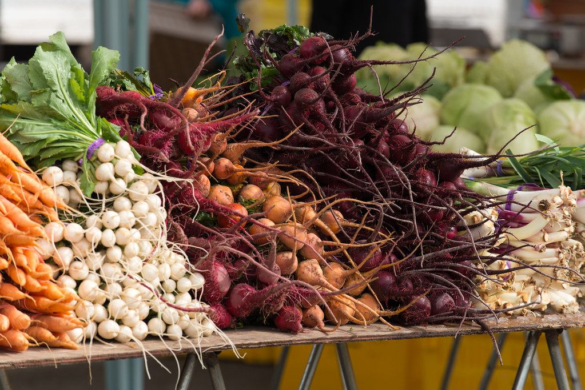
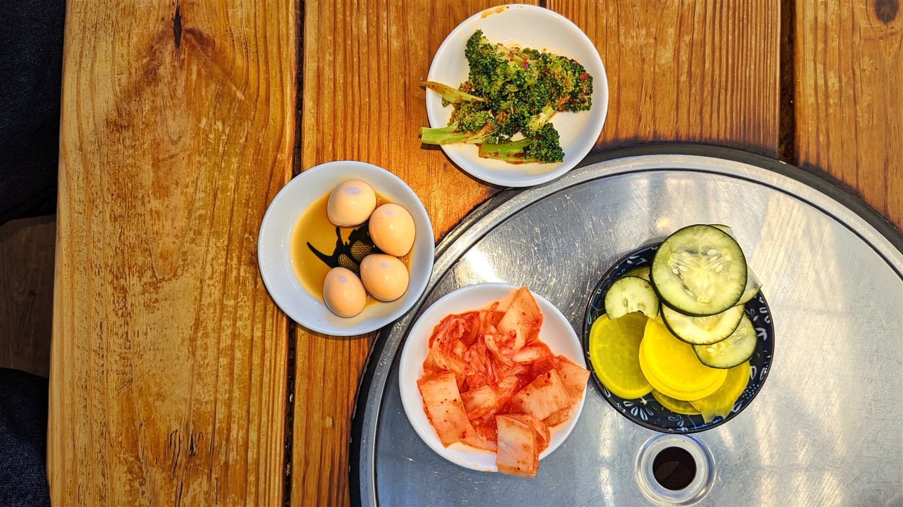

こだわり

一人で、丁寧に。
仁ちゃん食堂の厨房に立つのは、いつも一人です。ご注文を受けてから、一皿一皿丁寧に鍋を火にかけ、味を整えていきます。
辛さの好みは人それぞれです。「辛いのが得意ではない」という方にも、「しっかり辛いものが好き」という方にも、できる範囲でご相談に応じています。

手をかけた分だけ、時間もかかる
野菜はたっぷりと使い、スープにもしっかりと旨味を含ませています。手をかけた分だけ、時間もかかります。お昼どきは特に、ご注文からお料理が届くまで、少々お時間をいただくことがございます。それは、手を抜かずに一つひとつ作っているからこそ。気忙しい時間帯でも、丁寧さを変えないことを大切にしています。
OUR REGULARS
常連に愛される理由
仁ちゃん食堂には、長く通ってくださる常連のお客様がいらっしゃいます。お昼どきに少し待つ時間があっても、気長に待っていてくださる――それは、これまで味わってきた一皿一皿への信頼の表れだと感じています。
初めてお越しの方は、最初は勝手が分からず戸惑うこともあるかもしれません。ご注文の仕方などわからないことがあれば、どうぞお気軽にお声がけください。常連の方々の空気に混じって、少しずつこの食堂の時間を楽しんでいただけたら嬉しいです。
MATERIALS
素材・調理へのこだわり

スンドゥブのスープは、旨味をじっくり引き出すよう仕込んでいます。ビビンバやチヂミにも野菜をたっぷりと使い、見た目にも食べ応えのある一皿を目指しています。辛さは一律にせず、素材の味を活かした上で、お好みに応じて調整できるようにしています。